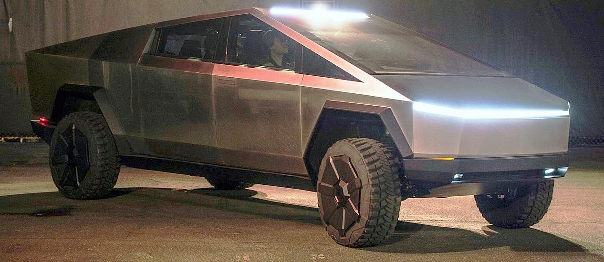

.jpg)
History
Founding (2003–2004)
The company was incorporated as Tesla Motors, Inc. on July 1, 2003, by Martin Eberhard and Marc Tarpenning.
Eberhard and Tarpenning served as CEO and CFO, respectively.
Eberhard said he wanted to build "a car manufacturer that is also a technology company", with its core technologies as "the battery, the computer software, and the proprietary motor".
Ian Wright was Tesla's third employee, joining a few months later.
In February 2004, the company raised $7.5 million in series A funding, including $6.5 million from Elon Musk, who had received $100 million from the sale of his interest in PayPal two years earlier.
Musk became the chairman of the board of directors and the largest shareholder of Tesla.J. B. Straubel joined Tesla in May 2004 as chief technical officer.
A lawsuit settlement agreed to by Eberhard and Tesla in September 2009 allows all five – Eberhard, Tarpenning, Wright, Musk, and Straubel – to call themselves co-founders.
Roadster (2005–2009)
Musk took an active role within the company and oversaw Roadster product design at a detailed level, but was not deeply involved in day-to-day business operations.
The company's strategy was to start with a premium sports car aimed at early adopters and then move into more mainstream vehicles, including sedans and affordable compacts.
In February 2006, Musk led Tesla's Series B venture capital funding round of $13 million, which added Valor Equity Partners to the funding team.
Musk co-led the third, $40 million round in May 2006 which saw investment from prominent entrepreneurs including Google co-founders Sergey Brin and Larry Page, and former eBay President Jeff Skoll.
A fourth round worth $45 million in May 2007 brought the total private financing investment to over $105 million.
Prototypes of Tesla's first car, the Roadster, were officially revealed to the public on July 19, 2006, in Santa Monica, California, at a 350-person invitation-only event held in Barker Hangar at Santa Monica Airport.
In August 2007, Eberhard was asked by the board, led by Elon Musk, to step down as CEO.
Eberhard then took the title of "President of Technology" before ultimately leaving the company in January 2008.
Co-founder Marc Tarpenning, who served as the Vice President of Electrical Engineering of the company, also left the company in January 2008.In August 2007, Michael Marks was brought in as interim CEO, and in December 2007, Ze'ev Drori became CEO and President.
Musk succeeded Drori as CEO in October 2008.In June 2009, Eberhard filed a lawsuit against Musk for allegedly forcing him out.
Tesla began production of the Roadster in 2008.
By January 2009, Tesla had raised $187 million and delivered 147 cars.
Musk had contributed $70 million of his own money to the company.
In June 2009, Tesla was approved to receive $465 million in interest-bearing loans from the United States Department of Energy.
The funding, part of the $8 billion Advanced Technology Vehicles Manufacturing Loan Program, supported engineering and production of the Model S sedan, as well as the development of commercial powertrain technology.
Tesla repaid the loan in May 2013, with $12 million interest.
IPO, Model S, and Model X (2010–2015)
In May 2010, Tesla purchased what would later become the Tesla Factory in Fremont, California, from Toyota for $42 million,and opened the facility in October 2010 to start production of the Model S.On June 29, 2010, the company became a public company via an initial public offering (IPO) on NASDAQ, the first American car company to do so since the Ford Motor Company had its IPO in 1956.
The company issued 13.3 million shares of common stock at a price of $17.00 per share, raising $226 million
In January 2012, Tesla ceased production of the Roadster, and in June the company launched its second car, the Model S luxury sedan.
The Model S won several automotive awards during 2012 and 2013, including the 2013 Motor Trend Car of the Year,and became the first electric car to top the monthly sales ranking of a country, when it achieved first place in the Norwegian new car sales list in September 2013.
The Model S was also the best-selling plug-in electric car worldwide for the years 2015 and 2016.
Tesla announced the Tesla Autopilot, a driver-assistance system, in 2014. In September that year, all Tesla cars started shipping with sensors and software to support the feature, with what would later be called "hardware version 1".In April 2015, Tesla entered the energy storage market, unveiling its Tesla Powerwall (home) and Tesla Powerpack (business) battery packs.The company received orders valued at $800 million within a week of the unveiling.
Tesla began shipping its third vehicle, the luxury SUV Tesla Model X, in September 2015, at which time it had 25,000 pre-orders.
SolarCity and Model 3 (2016–2018)
In November 2016, Tesla acquired SolarCity, in an all-stock $2.6 billion deal, and entered the photovoltaics market.
The solar installation business was merged with Tesla's existing battery energy storage products division to form the Tesla Energy subsidiary.
The deal was controversial because at the time of the acquisition, SolarCity was facing liquidity issues of which Tesla's shareholders were not informed.
In February 2017, Tesla Motors changed its name to Tesla, Inc., to better reflect the scope of its expanded business, which now included electric vehicles, battery energy storage systems, and solar power generation.
That year Tesla also started its philanthropic effort.
Tesla made multiple contributions of solar power to areas recovering from disasters in 2017, in particular installing a solar plus storage system to restore electricity at a hospital in Puerto Rico, following the destruction from Hurricane Maria.
In July 2018, the company donated $37.5 million to kindergarten to 12th grade science, technology, engineering, and mathematics education in Nevada.
Tesla began selling its fourth vehicle model, the Model 3 sedan, in July 2017.
The Model 3 was a cheaper vehicle compared to previous Tesla vehicles, and was intended for the mass market.
It was highly anticipated, which prompted the company to try to speed up production.By August 2017, there were 455,000 reservations for the Model 3.
The rollout was plagued by delays and production problems.
This increased pressure on the company, which at this time was one of the most shorted companies in the market.
In August 2018, CEO Elon Musk briefly considered taking Tesla private.
The plan did not materialize, and gave rise to much controversy and many lawsuits including a securities fraud charge from the SEC.
By the end of 2018, the production problems had been overcome, and the Model 3 was the world's best selling plug-in electric car for the year.
Global expansion and Model Y (2019–present)
Tesla opened its first "Gigafactory" outside the United States in Shanghai, China, in 2019.
Giga Shanghai was the first automobile factory in China fully owned by a foreign company, and was built in less than six months.
The following year Tesla also started construction on a new Gigafactory near Berlin, Germany, and another in Texas, United States.
In March 2020, Tesla began deliveries of its fifth vehicle model, the Model Y crossover.
On January 10, 2020, Tesla reached a market capitalization of $86 billion, breaking the record for highest valuation of any American automaker.
On June 10, 2020, Tesla's market capitalization surpassed those of BMW, Daimler and Volkswagen combined.
The next month, Tesla reached a valuation of $206 billion, surpassing Toyota's $202 billion to become the world's most valuable automaker by market capitalization.
On August 31, 2020, following this increase in value, Tesla had a 5-for-1 stock split.
From July 2019 to June 2020, Tesla reported four profitable quarters in a row for the first time, which made it eligible for inclusion in the S&P 500.
Tesla was added to the index on December 21, 2020.
It was the largest company ever added, and the sixth-largest company in the index at the time of its inclusion.
As investors tried to buy more shares as a result of this inclusion, some analysts, such as J.P. Morgan's Ryan Brinkman, suggested investors exercise caution as Tesla was "dramatically" overvalued.
Throughout 2020, the share price of Tesla increased 740%, and on January 26, 2021, its market capitalization reached $848 billion, more than the next nine largest automakers combined and making it the 5th most valuable company in the US.
From 2015 to 2020, Tesla acquired companies including Riviera Tool, Grohmann Engineering, Perbix, Compass Automation, Hibar Systems, and German ATW Automation to advance Tesla's expertise in automation, along with Maxwell Technologies and SilLion to add to Tesla's abilities in battery technology.
Grohmann (renamed Tesla Grohmann Automation) and Maxwell would continue to operate as subsidiary companies, while the rest would be merged into Tesla. In July 2021, Musk acknowledged that Tesla had sold Maxwell to the former VP of sales for Maxwell.
In January 2020, Tesla donated CN¥ 5,000,000 ($723,000 in 2020 dollars) to the Chinese Center for Disease Control and Prevention to fight the COVID-19 pandemic in mainland China.
In October 2020, Tesla told Electrek that it had dissolved its public relations (PR) department (with the exception of a few PR managers representing Tesla's European and Asian markets), becoming the first automaker to do so.
Tesla hit its goal of building 0.5 million cars in 2020.The company ended the year with over $19 billion of cash,compared to $6.3 billion at the end of 2019.
In February 2021, Tesla revealed that it had invested $1.5 billion in bitcoin in 2020 and on March 24 the company started accepting bitcoin as a form of payment for vehicle purchases in the United States and stated that it would introduce bitcoin payment in other countries later that year.At the time, Musk tweeted that "Bitcoin paid to Tesla will be retained as Bitcoin, not converted to fiat currency.
"It was later revealed in financial documents that between January 1 and March 31, 2021, Tesla had made a $101 million profit on the sale of bitcoin. After 49 days of accepting the digital currency, the company reversed course on May 12, 2021, saying they would no longer take bitcoin due to concerns that "mining" the cryptocurrency was contributing to the consumption of fossil fuels and climate change.
The decision resulted in the price of bitcoin dropping around 12% on May 13.
During a July bitcoin conference, Musk suggested Tesla could help bitcoin miners switch to renewable energy in the future and also stated at the same conference that if bitcoin mining reaches, and trends above 50 percent renewable energy usage, that "Tesla would resume accepting bitcoin.
" The price for bitcoin rose after this announcement.In July 2022 it was reported that Tesla had sold about 75% of its bitcoin holdings.It was worth $936 million.
After earlier disputes with California officials over COVID-19 restrictions, on December 1, 2021, Tesla moved its headquarters from Palo Alto, California, to its Gigafactory in Austin, Texas.However, Musk stated that Tesla would continue to operate its Fremont factory in the San Francisco Bay Area,and will continue to expand in California.In September 2021, Tesla broke ground on a new battery factory in Lathrop, California,and signed a lease in October 2021 for additional office space in Palo Alto.
Also in October 2021, Tesla's market capitalization reached $1 trillion, the sixth company to do so in U.S. history, on news that car rental company Hertz had placed an order for 100,000 Tesla vehicles for its fleet.
On March 22, 2022, Tesla launched its new car factory outside Berlin, with Chief Executive Elon Musk handing over the first deliveries to customers.
The US carmaker's Giga Berlin plant is the largest for electric vehicles in Europe.
On April 7, 2022, Tesla celebrated the public opening of the Giga Texas facility with its Cyber Rodeo event attended by an estimated 15,000 invitees.
Musk said in an email sent to employees that he was reducing salaried headcount by 10 percent because the company had become "overstaffed in many areas", adding that "hourly headcount will increase.
" He also said in a tweet Tesla's total number of employees would increase over the next year, but said the number of salaried staff would remain "fairly flat".
In August 2022, Musk claimed that Tesla had made more than 3 million cars.
TESLA cars
.jpg)
.jpg)
.jpg)
.jpg)
.jpg)
Automotive products
- As of January 2022, Tesla offers four car models: Model S, Model 3, Model X and Model Y.
Tesla's first vehicle, the first-generation Tesla Roadster, is no longer sold.
Tesla has plans for a second-generation Roadster, a semi-truck, and a pickup called the Cybertruck.
In production
01. Model S
- The Model S is a five-door liftback sedan.
Deliveries began on June 22, 2012.
The car became the first electric vehicle to top the monthly sales ranking in any country, when it achieved first place in the Norwegian new car sales list in September 2013.
The Model S won the 2013 Motor Trend Car of the Year,the 2013 "World Green Car",Automobile magazine's 2013 "Car of the Year",Time magazine's Best 25 Inventions of the Year 2012 award,as well as the 2019 Motor Trend "Ultimate Car of the Year".
- The Model S was the best-selling plug-in electric car worldwide for the years 2015 and 2016, selling an estimated 50,931 units in 2016.
By the end of 2017, it was the world's second best selling plug-in electric car in history (after the Nissan Leaf), with global sales of 200,000 units.
In June 2020, Tesla announced that the Model S Long Range Plus had an EPA range of 402 miles (647 km), the highest of any battery electric vehicle at the time.

02.Model X
- The Tesla Model X is a mid-size crossover SUV.
It is offered in 5-, 6- and 7-passenger configurations.
The Model X was developed from the full-sized sedan platform of the Model S.
The rear passenger doors open vertically with an articulating "falcon-wing" design.
- Deliveries started in September 2015.
In 2016, after one full year on the market, the Model X ranked seventh among the world's best-selling plug-in cars.
The United States is its main market, with an estimated 57,327 units sold through September 2018.
03.Model 3
- The Model 3 is a four-door fastback sedan. Tesla unveiled the Model 3 on March 31, 2016.Potential customers began reserving spots earlier that day with a refundable deposit.One week after the unveiling, Tesla reported over 325,000 reservations.Bloomberg News claimed that, due to the number of reservations, "the Model 3's unveiling was unique in the 100-year history of the mass-market automobile."
Limited vehicle production began in July 2017.
Since March 2020, the Model 3 is the world's best selling electric car in history, and cumulative global sales passed the 1 million milestone in June 2021.
The Model 3 has ranked as the world's best selling plug-in electric car for four consecutive years, from 2018 to 2021,and also as the best selling plug-in electric car in the United States since 2018.The Model 3 also set records in Norway and the Netherlands, as the best selling passenger car model in those countries in 2019.

04.Model Y
The Model Y is a compact crossover utility vehicle. The Model Y is built on a platform that shares many components with the Model 3.
The car has up to three rows of seats (up to 7 people),68 cubic feet (1.9 m3) of cargo space (with the second and third rows folded),and has an EPA range of up to 326 miles (525 km).
The Model Y was unveiled on March 14, 2019.Deliveries for the Model Y started on March 13, 2020. The Tesla Model Y is being manufactured at Tesla Factory in Fremont, California,as well as in Giga Shanghai in China.
A version of the Model Y is also expected to be produced at Giga Berlin once the factory is open.
Future products
01.Roadster (second generation)

In a surprise reveal at the end of the event that introduced the Tesla Semi on November 16, 2017, Tesla unveiled the second generation Roadster.
Musk said that the new model will have a range of 620 miles (1,000 km) with the 200 kilowatt-hours (720 MJ) battery pack and will achieve 0–60 miles per hour (0–97 km/h) in 1.9 seconds; it also will achieve 0–100 miles per hour (0–161 km/h) in 4.2 seconds,and the top speed will be over 250 miles per hour (400 km/h). The SpaceX Package will include cold air thrusters that will increase the speed even more.The vehicle will have three electric motors allowing for all-wheel drive and torque vectoring during cornering.
At the time, the base price was set at $200,000, while the first 1,000 units (the Founder's series) will sell for $250,000.
Reservations required a deposit of $50,000, and those who ordered the Founder's series paid the $250,000 in full upon ordering. Those who made a reservation at the event were allowed a test drive (with a driver) in the prototype.Deliveries are expected to start in 2023.
02.Tesla Semi

The Tesla Semi is an all-electric Class 8 semi-trailer truck announced in November 2017. Musk confirmed that two variants would be available: one with 300 miles (480 km) and one with 500 miles (800 km) of range.The Semi will be powered by four independent electric motors of the type used in the Tesla Model 3 and will include an extensive set of hardware sensors to enable it to stay in its own lane, a safe distance away from other vehicles, and later, when software and regulatory conditions allow, provide self-driving operation on highways.Musk also announced that the company would be involved in installing a solar-powered global network of Tesla Megachargers to make the Semi more attractive to potential long-haul customers. A 30-minute charge would provide 400 miles (640 km) of range.
Musk initially said in 2017 that Semi deliveries would start in 2019 and be selling 100,000 trucks a year, but deliveries were later delayed to 2021 and then 2023.Part of the reason for the delays, according to Musk, is that the Semi includes five times more battery cells than their passenger cars, and the battery supply is not yet sufficient for both Tesla cars and the Semi.
03.Cybertruck

The Cybertruck is a pickup truck unveiled on November 21, 2019.
Production has been delayed past 2022, and as of January 2022 is rumored to be early 2023.The truck's design had a mixed reception, and some Wall Street analysts questioned whether American pickup truck buyers will have interest in the Cybertruck.On September 22, 2020, Musk revealed roughly 600,000 Cybertruck preorders.James Goodwin, chief executive of ANCAP, said in 2019 that the design of the Cybertruck could pose safety risks, saying that the front "would look like it’s not very forgiving".After the Cybertruck's unveiling, Musk announced that the Tesla Cyberquad, an electric four-wheel quad bike revealed alongside the Cybertruck, would be an optional accessory for Cybertruck buyers.
Tesla Energy products
Tesla subsidiary Tesla Energy develops, builds, sells and installs solar energy generation systems and battery energy storage products (as well as related products and services) to residential, commercial and industrial customers.
The subsidiary was created by the merger of Tesla's existing battery energy storage products division with SolarCity, a solar energy company that Tesla acquired in 2016.
Tesla Energy's generation products include solar panels (built by other companies for Tesla), the Tesla Solar Roof (a solar shingle system) and the Tesla Solar Inverter.
Other products include the Powerwall (a home energy storage device) and the Powerpack and Megapack, which are large-scale energy storage systems.Tesla Energy also develops software to allow customers to monitor and control their systems.
In 2021, the company deployed solar energy systems capable of generating 345 megawatts, an increase of 68% over 2020,and deployed 3.99 gigawatt-hours of battery energy storage products, an increase of 32% over 2020.
classic cars